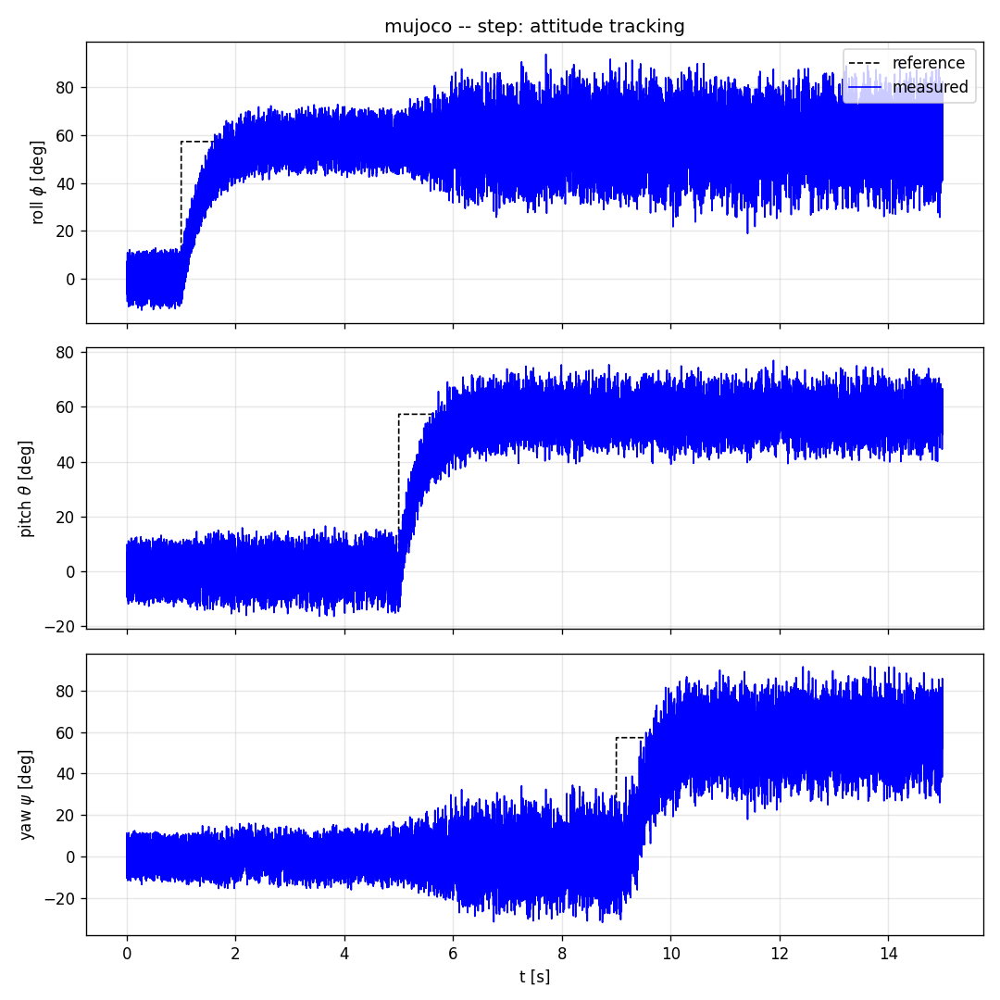
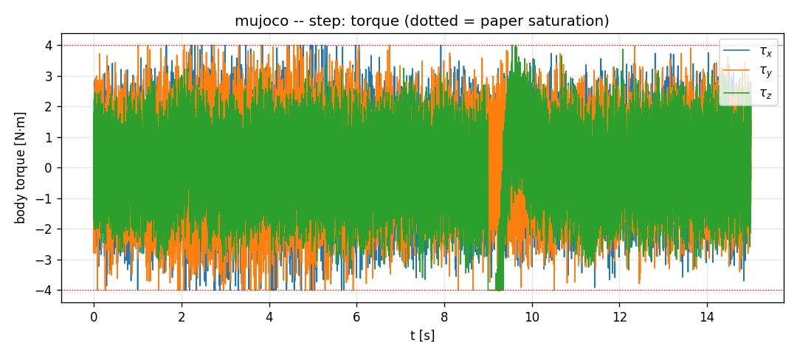
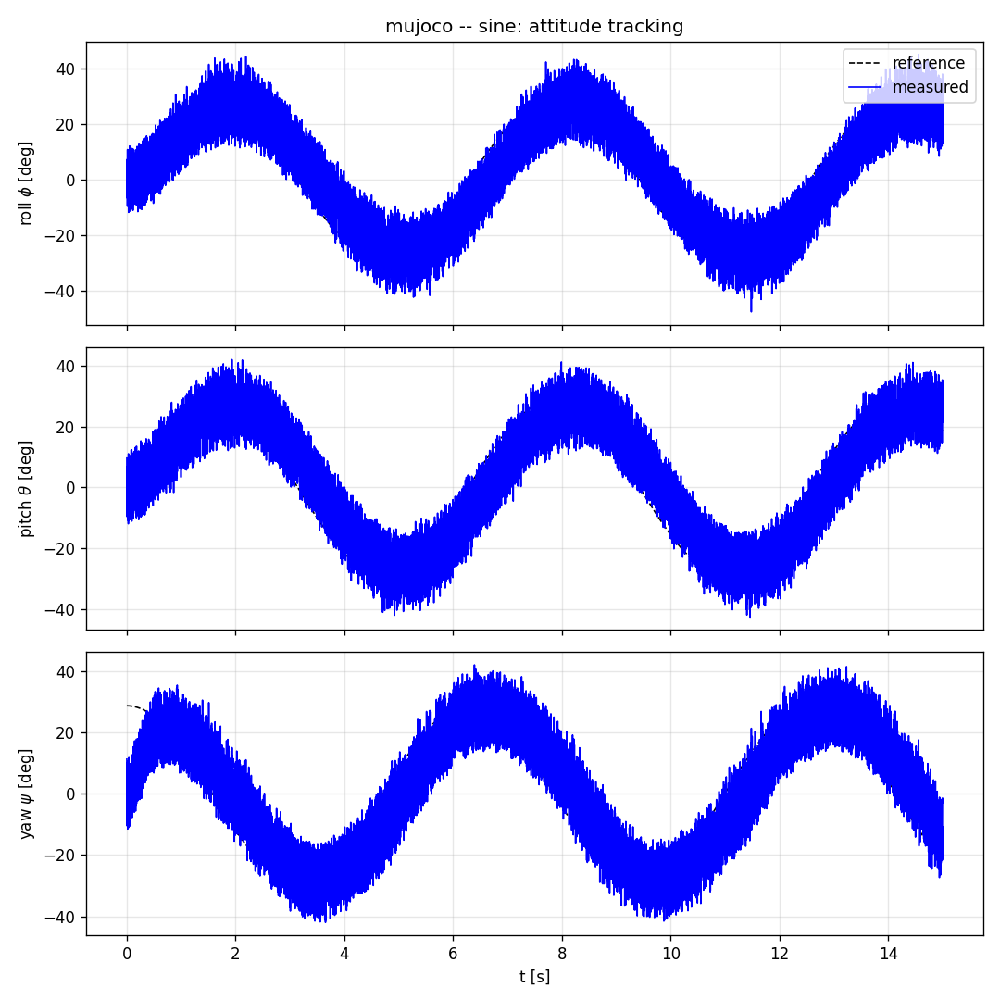
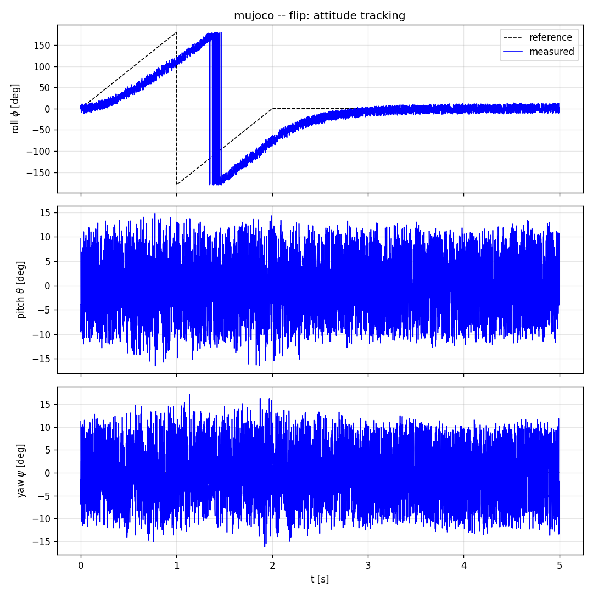
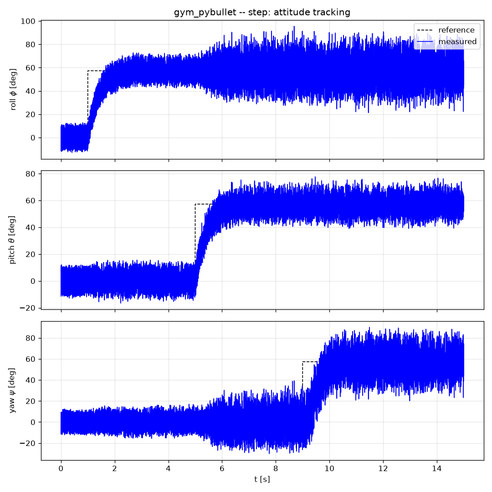
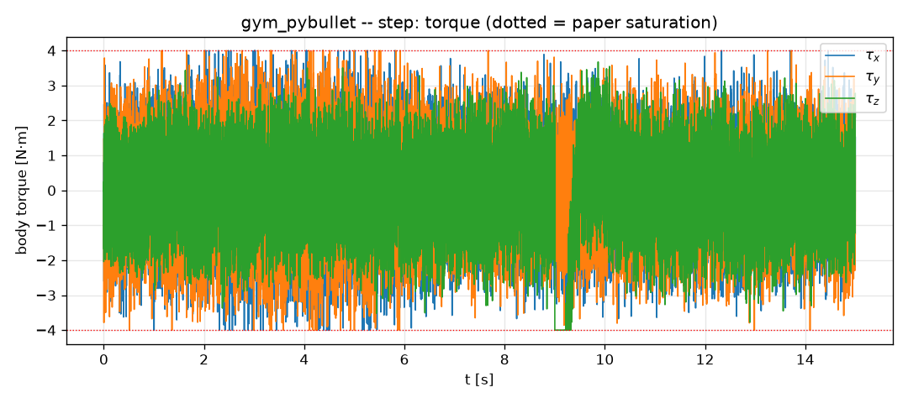
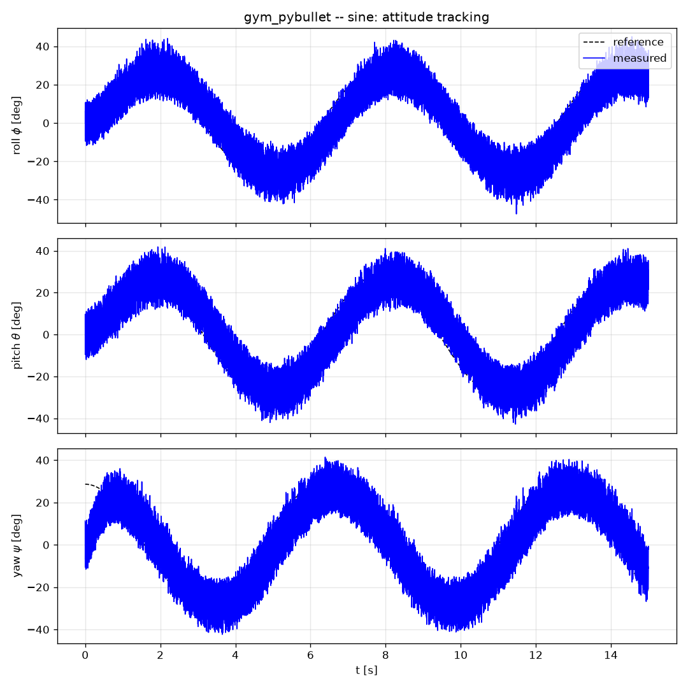
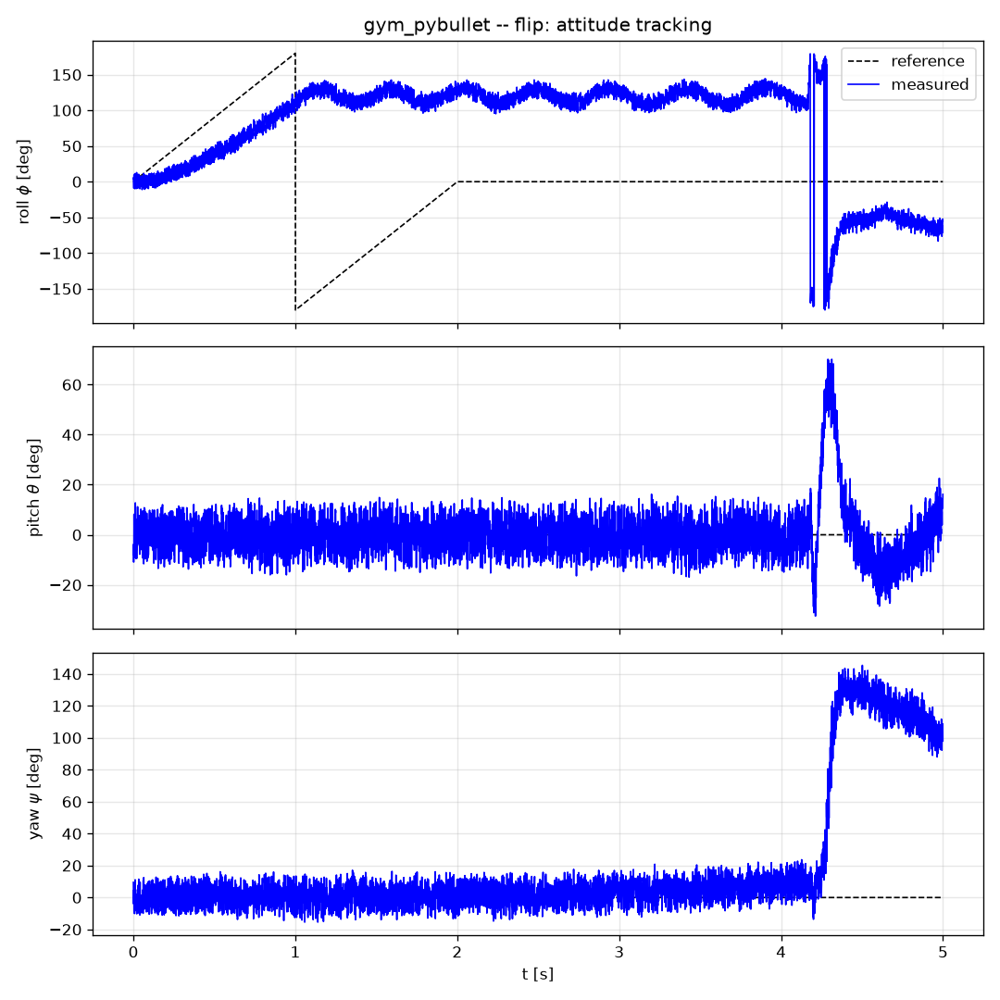

gym-pybullet-drones
✓ VALIDATED NATIVELY24 kHz control loop, custom paper-vehicle URDF. Step & sine within 0.2° RMS of MuJoCo.
MuJoCo
✓ VALIDATED NATIVELY20 kHz physics, contact floor. All three paper scenarios; flip completes airborne (3 seeds).
Gazebo
● RUNBOOK-READY (WSL2)SDF 1.10 world + ardupilot_gazebo physics; one-shot launch script in sim/gazebo/.
ArduPilot SITL
● BRIDGE-READY (WSL2)MAVLink SET_ATTITUDE_TARGET @ 50 Hz — the controller as an outer loop, exactly as on hardware.
The headline result
With identical gains, references, and the paper's ±0.1 noise model, step and sine tracking agree across two independent physics engines to within 0.2° RMS (17.7° vs 17.7°; 17.6° vs 17.5°). The closed loop belongs to the controller, not the engine. The 360° flip completes deterministically on MuJoCo and hits an engine-dependent limit cycle on PyBullet — analyzed as the P² pursuit equilibrium (Eq. 33 in the repo's file map).
Benchmark — every run (seeds 0–2 for flips)
| simulator | scenario | RMS att. err [deg] | max att. err [deg] | settle φ [s] | settle θ [s] | settle ψ [s] | torque sat. | drift [m] | duration [s] |
|---|---|---|---|---|---|---|---|---|---|
| gym_pybullet | flip | 115.19 | 179.88 | 5.00 | 5.00 | 5.00 | 0.79 | 28.19 | 5.00 |
| gym_pybullet | flip | 113.82 | 179.88 | 5.00 | 4.47 | 5.00 | 0.79 | 29.11 | 5.00 |
| gym_pybullet | flip | 115.72 | 179.91 | 5.00 | 4.70 | 5.00 | 0.79 | 29.05 | 5.00 |
| gym_pybullet | sine | 17.52 | 41.17 | 12.47 | 8.65 | 5.85 | 0.01 | 105.39 | 15.00 |
| gym_pybullet | step | 17.68 | 70.74 | 13.97 | 0.87 | 6.00 | 0.02 | 1275.92 | 15.00 |
| gym_pybullet | step | 17.58 | 71.84 | 14.00 | 0.83 | 6.00 | 0.02 | 1276.38 | 15.00 |
| mujoco | flip | 44.39 | 91.91 | 2.88 | 0.00 | 0.00 | 0.01 | 54.40 | 5.00 |
| mujoco | flip | 44.55 | 91.32 | 2.97 | 0.00 | 0.00 | 0.01 | 54.43 | 5.00 |
| mujoco | flip | 44.51 | 90.91 | 2.95 | 0.00 | 0.00 | 0.01 | 54.52 | 5.00 |
| mujoco | sine | 17.61 | 41.10 | 12.47 | 8.65 | 5.82 | 0.01 | 105.66 | 15.00 |
| mujoco | step | 17.71 | 71.18 | 13.97 | 0.86 | 6.00 | 0.02 | 1864.86 | 15.00 |
| mujoco | step | 17.66 | 72.92 | 14.00 | 0.83 | 6.00 | 0.02 | 1875.99 | 15.00 |
MuJoCo — the paper's three scenarios




gym-pybullet-drones — same controller, same references




Findings (all in the repo, with measurements)
- The controller transfers across engines. Step/sine agree within 0.2° RMS between MuJoCo and PyBullet.
- The paper's ±4 N·m bound is not rotor-realizable (~0.4 N·m physical max), and yaw's tiny authority under ±0.1 quaternion noise demanded PX4-style priority mixer desaturation (Eq. 32).
- Flips need acro-style thrust handling: idle collective when inverted, cap when torque demand is high — tilt-compensated altitude hold otherwise deadlocks the flip at exactly 180°.
- The flip is knife-edge on rotor plants: the law's rate equilibrium ω=5·sin(e/2) makes a 2 s ramp trackable only at lag ≈1.36 rad; MuJoCo completes, PyBullet limit-cycles (Eq. 33).
- The 12.3 kHz control-rate bound carries over: both native adapters run the controller every physics step (20–24 kHz) and assert the derived minimum at startup.
- Integration gotchas documented: BaseAviary.GRAVITY is weight not g; PyBullet's default damping eats flip momentum; MJCF visual geoms silently add mass; spawn poses must follow the scenario altitude.
Run it yourself
git clone https://github.com/Sainath-Reddy7/Drones_S5_CD_12_Full_Quaternion_Based_Attitude_Control_for_a_Quadrotor.git cd Drones_* && git checkout sainath/sim-deployment python -m sim.mujoco.run --scenario step --duration 15 --seed 0 --noise 0.1 # MuJoCo, native python -m sim.gym_pybullet.run --scenario flip # gym-pybullet-drones, native bash sim/gazebo/run_gazebo.sh step # Gazebo, under WSL2 python -m sim.ardupilot.bridge_node --scenario step # ArduPilot SITL, WSL2 bash sim/run_all.sh # whole native benchmark + this table
Every number and figure on this page is machine-generated by sim/run_all.sh + python -m sim.compare + python -m sim.site_gen — nothing hand-edited. Full source, tests (41), and derivations: sainath/sim-deployment branch.